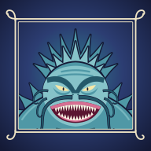

Unfathomable Companion - Support
Getting started
- Setup: tick From the Abyss if you play with the expansion, then tap the characters your table picked. The app shows the loyalty deck, the starting titles and resource dials, and can draw your prelude cards.
- Roles: after Start game, mark players as in the Brig or revealed as traitors - the Captain and Keeper of the Tome titles pass down the lines of succession automatically.
- Dice, Monsters, Rules: the attack table, what each monster does for the activation icons on your mythos card, and the full searchable Rules Reference, with From the Abyss changes shown when the expansion is in the game.
Frequently asked questions
Does it need an internet connection?
The apps work
fully offline. The website needs a connection to load.
Where is my game saved?
Only on your device. It is
kept when you close the app; nothing is sent anywhere.
How do I start a new game?
Tap New game
at the top. This clears the characters, titles, statuses and the log,
but keeps your game settings.
A rule looks wrong.
Please let us know (see below)
with the screen it is on and whether you play with From the Abyss. The
rules come from the official Rules Reference and the From the Abyss
rulebook.
Is this an official app?
No. It is a free fan
project and is not affiliated with Fantasy Flight Games. You need the
board game to play.
Contact
Questions, bugs or rule corrections: takras@takras.net
Privacy: see the privacy policy - the app collects no personal data.